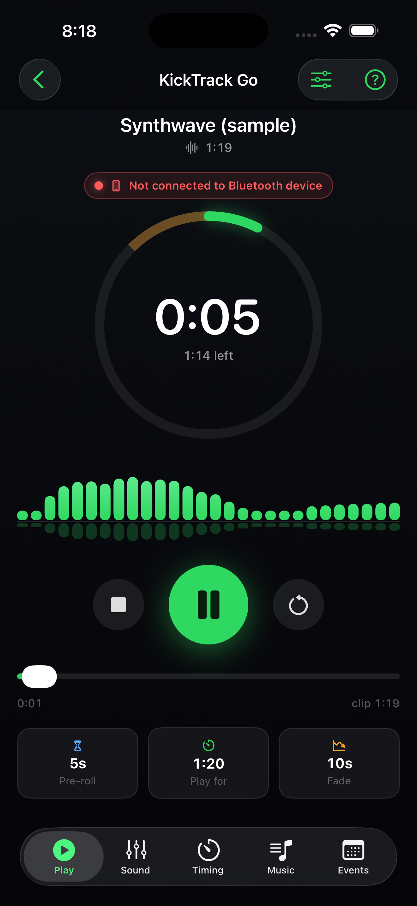
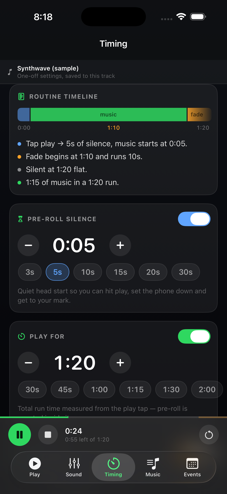

Support
KickTrack Go
Last updated: 21 September 2026
Need a person? Email support@kicktrackgo.com. Tell us your device and iOS version and we'll get back to you.
What the app does
You can't press play and be on your mark at the same time. KickTrack Go fixes that: load your music, set the silent walk-on you need to reach your spot, and the track starts itself while you're getting there. It fades out on an exact clock, so a 90-second cut is 90 seconds.
It's built for creative and XMA martial arts forms, dance routines, cheer, and any performance where you start the music, put the phone down, and have to be standing still before the first beat.


Getting started
1. Add your music
On the Music screen, tap Add from Files and pick an audio file. The app keeps its own copy, so your track still works later even if you move or rename the original.
Three sample tracks are already in your library on first launch, including a speaker check — you can try everything without importing anything.

2. Set your walk-on
On the Timing screen, set pre-roll to how many seconds you need to reach your mark. Press play, walk out, and the music comes in when you're set.

3. Cut it to the clock
Still on Timing, set play for to your routine's length and a fade to end on. Use start point to begin partway into the song. The timeline shows silence, music and fade as one picture, so you can see the routine before you hear it.

4. Shape the sound
The Sound screen has a 5-band EQ, plus Bass Boost and Vocal Clarity under Enhancements for rooms that swallow either. Quick adjust nudges bass or vocals in one tap. Save a tone you like as a preset and reuse it on other tracks.


{kind=link}
{kind=link}
{kind=link}
Competition day
The Events tab holds Performances. A Performance has a name, date and location, and one playlist per time you're on the floor.
Every song in an event carries its own pre-roll, play limit, fade and EQ — so the same audio file can run as a 60-second cut in prelims and a 90-second cut in finals, with nothing to change between them.


Test before you perform
Always run your full setup end to end before it counts. Play each track the whole way through, on the speaker or PA you'll actually compete on, at the volume you'll actually use — and stand through the pre-roll so you know the walk-on lands where you need it.
A run-through catches what a glance doesn't: a pre-roll that's a second short, a fade that lands early, an EQ that distorts once the room volume is up, a Bluetooth speaker that drops out, or a track that needs re-importing. All of it is easy to fix at home and impossible to fix on the floor.
Check the battery and the connection too, and play the bundled speaker check through the venue's system when you can get to it early.


Common questions
| What's happening | What to do |
|---|---|
| Nothing plays for the first few seconds | That's your pre-roll — it's the silent walk-on, and it's working. Change it on the Timing screen, or set it to zero. |
| The track stops before the song ends | The play-for limit is cutting it to length. Adjust it on Timing, or switch the limit off to play the whole file. |
| A warning says "not connected — phone speaker" | Nothing is plugged in or paired. Connect your speaker or headphones. You can still choose Play Anyway to rehearse. |
| Not sure the PA is working | Play the bundled speaker check — tones, sweeps and pink noise — before it matters. |
| The sound distorts when the EQ is pushed | Turn on Auto level under Output on the Sound screen. It keeps a hot EQ from clipping. |
| A track shows as missing | Re-import it from Files. The app copies what you give it, so the copy only goes away if the app's data is cleared. |
| Want the walkthrough again | Tap the ? button in the top-right of the Play screen. |
| Want to hide a feature you don't use | The sliders button next to ? on the Play screen switches individual features off. |
Requirements
- iPhone running iOS 17.0 or later
- No account, no sign-in, and no internet connection required
Privacy
KickTrack Go collects nothing and transmits nothing. The app has no network capability at all — no analytics, no tracking, no third-party components. Everything you put into it stays on your device, and deleting the app removes all of it.
Full details are in the privacy policy.
Contact
Questions, problems or feature requests: support@kicktrackgo.com